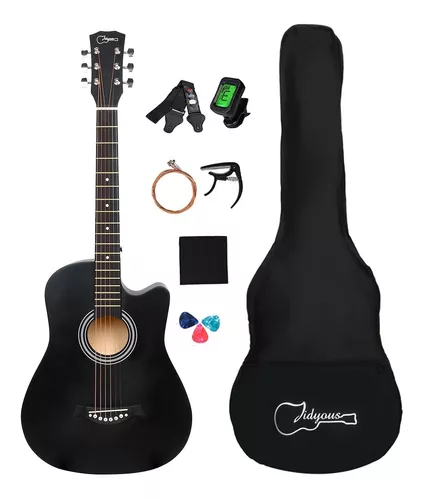
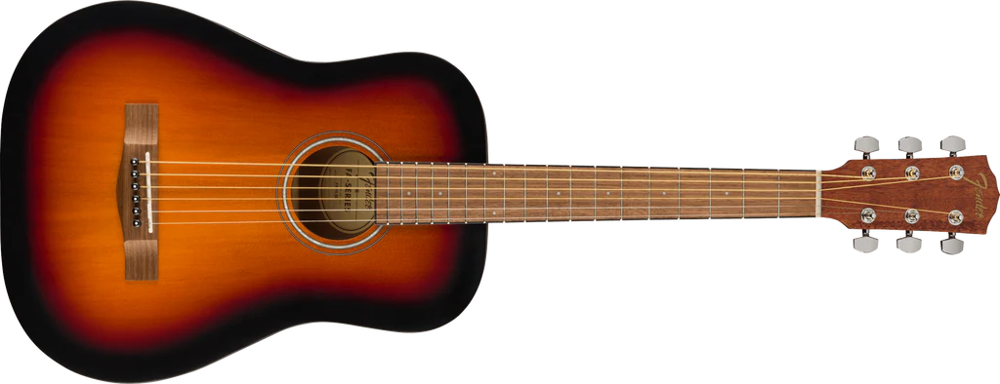

Partes de guitarra Acustica
A continuacion se te estarna mostrando dos ejemplos de guitarras que podrias adquirir
Kit De Guitarra Acústica Para 38 Pulgadas Y Accesorios precio:$ 1,257 , 53 24% OFF en 6x 209 pesos con 59 centavos $ 209 , 59 sin interés IVA incluido

FENDER 0971170103 ACUSTICA FA15 6182-081 Precio habitual$ 3,500.00 Impuesto incluido. Modelo: 0971170103 Marca: FENDER Descripción: Guitarra acústica FA15, cuerda de metal, escala 3/4, color sunburts, incluye funda.
